Starter Motor: Testing and Inspection
On-vehicle Inspection1. Verify that the battery is fully charged.
2. Crank the engine and verify that the starter turns smoothly without any noise.
3. If not as specified, measure the voltage at terminals S and B when the ignition switch is in the START position.
Specification
Above 8 V
4. If the voltage is within the specification, remove the starter and inspect the magnetic switch and the starter.
5. If the voltage is not as specified, inspect the wiring harness, ignition switch, starter interlock switch (MT), and transmission range switch (AT).
No Load Test
1. Verify that the battery is fully charged.
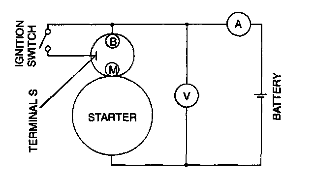
2. Connect the starter, battery, voltmeter, and ammeter as shown.
3. Operate the starter and verify that it turns smoothly.
4. Measure the voltage and current while the starter is operating.
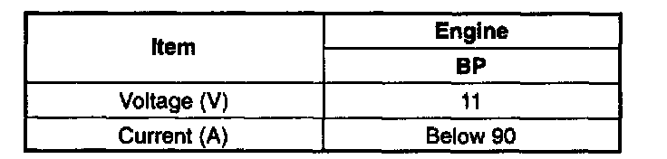
Specification
5. If not as specified, repair or replace the inner parts as necessary.
Magnetic Switch Operation Inspection
CAUTION: Applying power for more than 10 seconds can damage the starter. Do not apply power for more than the aforementioned time.
Pull-out test
NOTE: In case the battery is being charged, the pinion may turn while in a protruded state. This is normal because the current flows to the motor through the pull-in coil and the motor turns.
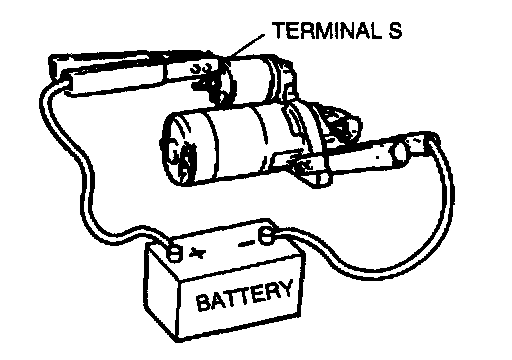
1. Verify that the drive pinion is pulled out with battery positive voltage connected to terminal S and the starter body grounded.
2. If not as specified, repair or replace the inner parts as necessary.
Return test
1. Disconnect the motor wire from terminal M.
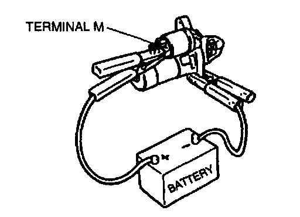
2. Connect battery positive voltage to terminal M and ground the starter body.
3. Pull out the drive pinion with a screwdriver. Verify that it returns to its original position when released.
4. If not as specified, repair or replace the inner parts as necessary.
Pinion Gap Inspection
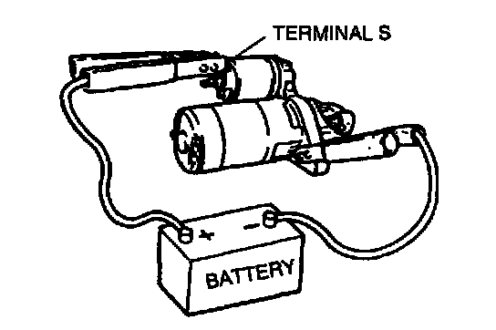
1. Pull out the drive pinion with battery positive voltage connected to terminal S and the starter body grounded.
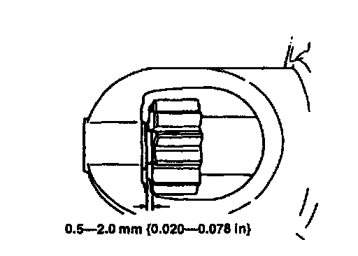
2. Measure the pinion gap while the drive pinion is pulled.
Specification
0.5 - 2.0 mm (0.020 - 0.078 in)
3. If not as specified, adjust with an adjustment washer (between drive housing front cover and magnetic switch).
Starter Inner Parts Inspection
Armature
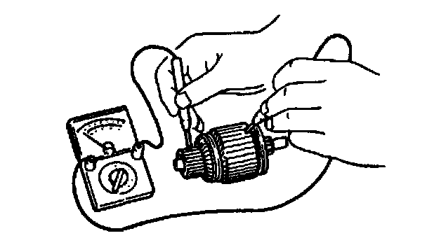
1. Verify for no continuity between the commutator and the core at each segment by using an ohmmeter.
2. If there is continuity, replace the armature.
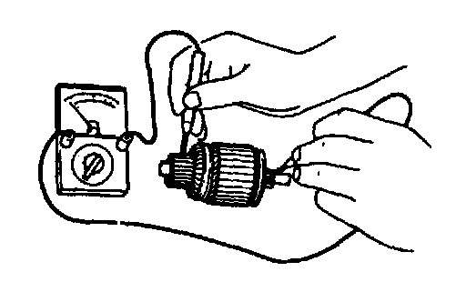
3. Verify for no continuity between the commutator and the shaft by using an ohmmeter.
4. If there is continuity, replace the armature.
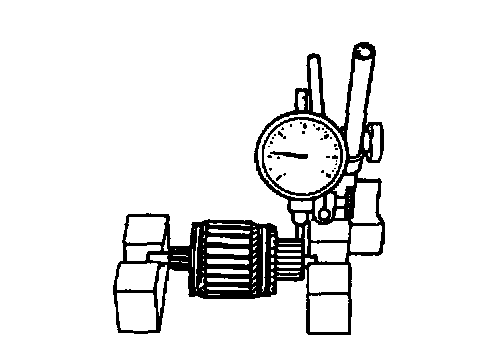
5. Place the armature on V-blocks, and measure the runout by using a dial indicator.
Runout
0.03 mm (0.001 in) max.
6. If not within the specification repair by using a lathe or replace the armature.
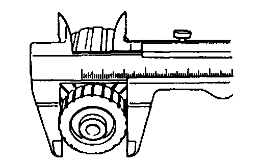
7. Measure the commutator diameter.
Standard commutator diameter 29.4 mm (1.16 in)
Minimum commutator diameter 28.8 mm (1.14 in)
8. If not within the minimum specification, replace the armature.
9. Measure the segment groove depth of commutator.
Standard depth 0.5 - 0.8 mm (0.02 - 0.03 in)
Minimum depth 0.2 mm (0.008 in)
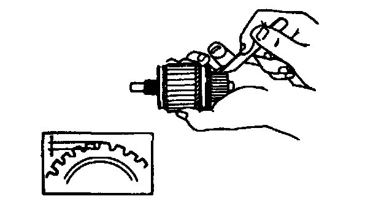
10. If not within the minimum specification, undercut the grooves to the standard depth.
Magnetic switch
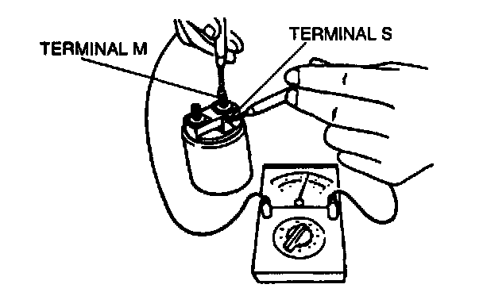
1. Verify for continuity between terminals S and M by using an ohmmeter.
2. If there is no continuity, replace the magnetic switch.
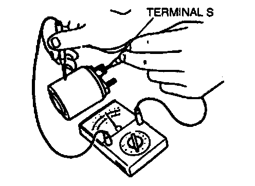
3. Verify for continuity between terminal S and the body by using an ohmmeter.
4. If there is no continuity, replace the magnetic switch.
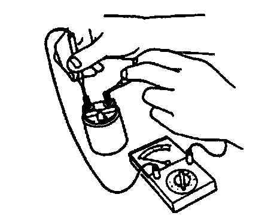
5. Verify for no continuity between terminals M and B by using an ohmmeter.
6. If there is continuity, replace the magnetic switch.
Brush and brush holder
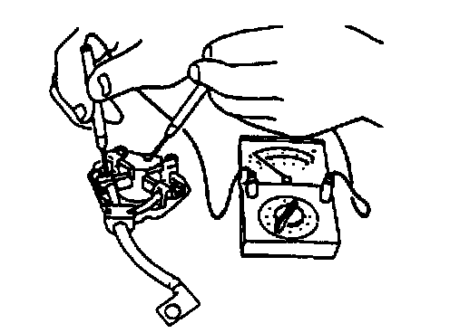
1. Verify for no continuity between each insulated brush and the plate by using an ohmmeter.
2. If there is continuity, replace the brush holder.
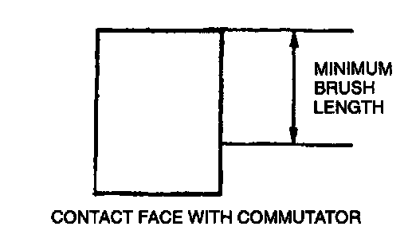
3. Measure the brush length.
Standard brush length 12.3 mm (0.48 in)
Minimum brush length 7.0 mm (0.28 in)
4. If any brush is worn almost to or beyond the minimum specification, replace all the brushes.
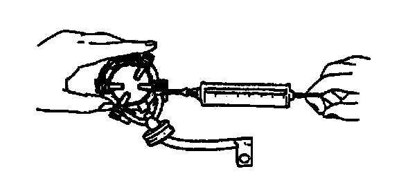
5. Measure the brush spring force by using a spring balance.
Standard spring force 15.05 - 20.35 N (1.534 - 2.076 kg, 3.375 - 4.567 lb)
Minimum spring force 5.9 N (0.60 kg, 1.32 lb)
6. If not within the minimum specification, replace the brush spring.